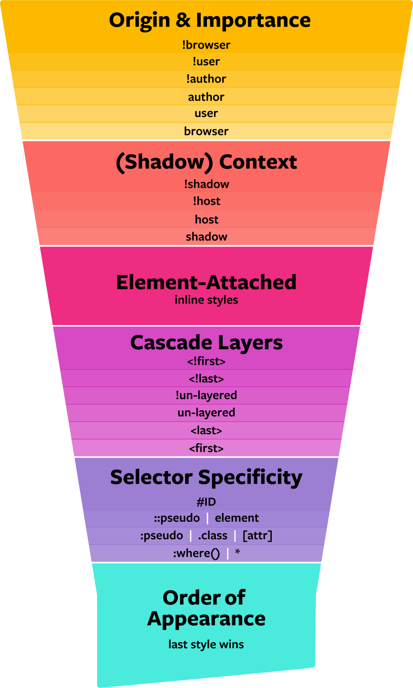

An example of a newer feature of the CSS world is the new Cascading Layers feature. The cascade layers CSS feature allows us to define explicit contained layers of specificity, so that we have full control over which styles take priority in a project without relying on external sources for help. But what does this mean? You can establish your own origin and importance to yur code and start a hierachy of what you would like to see first in your layers and as you navigate through your website!
Here is a visual example!!
Image taken from https://css-tricks.com/css-cascade-layers/
My favorite CSS feature that I have worked with so far would be the text decoration ability! This feature allows you to enhance the visual style and appearance of your text within your website. Some of the things you can accomplish with this feature are different styles of underlining and overlining text such as in different colors or different types of underlines like dotted or wavy!. You can add more thickness to your text beyond your basic bolding attribute to make your heading and in text highlights pop even more!
This text has a red underline.
This text has a green strikethrough.
This text has a dotted purple underline.
With the dawn of AI softwares at easy access to the general public over the last few years, we are about to see a revolution in the way website are created and coded, as well as the process of user experience (UX) that is so vital to the overall fucntionality of even your most basic website. AI has to ability to help with long and arduious tasks that coders face every day and help a project that should take many hours take much less then that. This can range from intense data analysis that can now be done in seconds to automating repetitive tasks that are featured multiple times throughout a large website. AI also helps website coders figure out many of the issues in their code with a simple search that can point out exactly what is wrong and what steps are needed to correct it. This is a process that used to take almost as long as writing the code itself, but now takes much less time thanks to new developments in AI technology like CHATGPT. I personally believe the benefits outweigh the cons when it comes to this brand new way of life in the web design world, and it can allow us to explore many unchartered territories many thought were impossibel 5-10 years ago!!